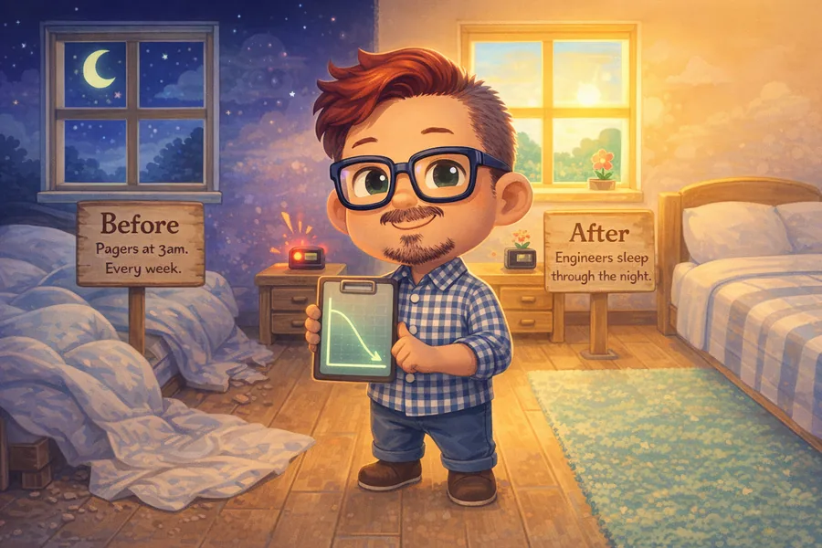

"He walks into ambiguous situations, identifies what hasn't been addressed, and gets results — all while getting a smile out of everyone in the room."
Brianna Gamp · Information Security Leader
The work, briefly
backgroundAn English major's career, in disguise.
From novels to databases to dashboards — the same instinct, sharpening. Reading for what isn't said. Asking until the real question shows up. Writing it down so the team can move. English-major roots, business-analyst present, stubbornly curious throughout.
Current role
Principal Business Analyst, SFMTA
Before SFMTA
Apple
7 yrs
Consulting
4 yrs
Elegrity
3 yrs
eBay
1.5 yrs
Education
MS Business Analytics · Saint Mary's · UChicago BA, English Lit
Favorite kind of problem
0 → 1. Building what doesn't exist yet.
Selected work
portfolio
Practice
Patterns
The questions I keep asking, the two kinds of problems that keep showing up, and the sweet spot where I do my best work.
See the patterns →
The Person
About Nabil
Cats, tea, English literature, three pillars as described by Mary Salome, feminist science fiction off the clock, and twenty years of testimonials.
Meet Nabil →